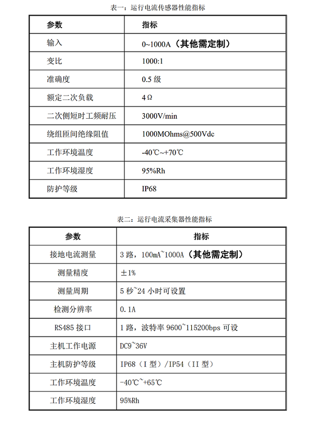

-
-
- 产品名称：电缆运行电流在线监测系统
- 产品类型：在线监控设备
- 生产商：霍开自研开发
- 功能：电缆运行电流在线监测
-
- 产品详情
- 本公司开发生产的运行电流在线监测系统适用于 35kV 以上单芯电缆的多点接地故障监测，可以对电缆电流的幅值大小进行监测和报警。可以与接地环流采集系统配合对电缆以及地线上的运行电流状态进行判别和报警，对电缆的历史电流进行取样存盘并通过电流曲线分析其性能的变化。
- 该系统由运行电流传感器、运行电流采集器和中心数据处理器组成。系统通过安装在电缆上工频电流传感器，来获取接运行电流的大小。该传感器采用坡莫合金作为传感器的磁芯材料，精度高，耐饱和电流能力强。传感器输出的电压信号通过屏蔽电缆接入运行电流采集终端。每个护层电流采集终端可接入 3 路运行电流传感器信号，运行电流采集终端安放于每组接头旁的现场采集箱内，对 3 路运行电流传感器的信号进行实时采集分析，并将数据结果通过通讯总线发送至中心数据服务器。操作员的管理及系统状态监测数据及远程控制数据等自动存储在数据库中，需要时可以简单快速地检索查询。
- 系统主要配置及参数:
